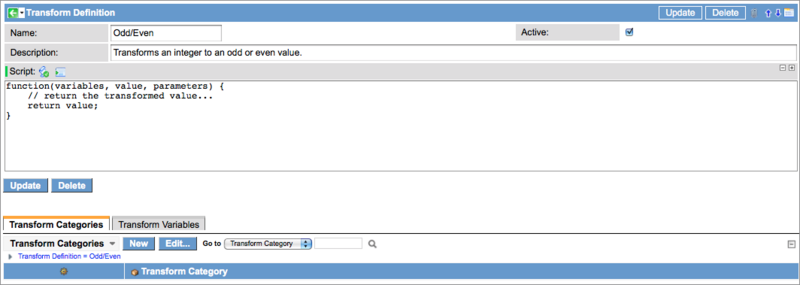
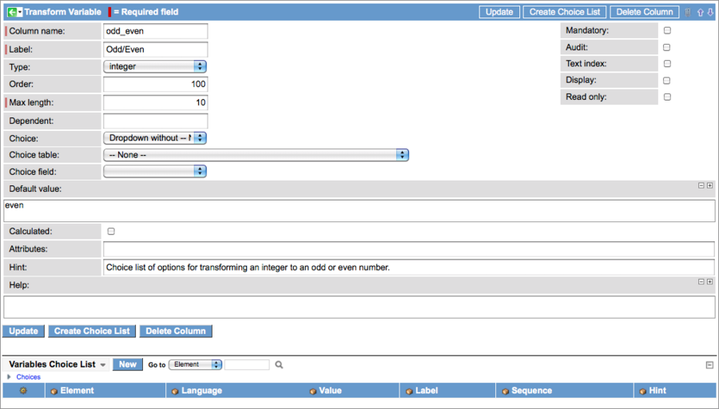
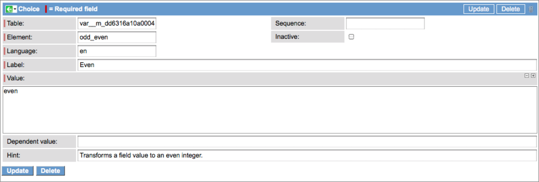

Transform Definitions
Contents
1 Overview
Transform definitions define the transformation actions available for a given field type. Users select a definition when they transform a field, and then provide the definition with the specific parameters that are applied to the transformation. For example, a definition can round up an integer or insert a value at a defined position in a string. ServiceNow provides a number of definitions that are designed to meet the needs of most organizations. If an administrator needs a transformation action that is not available in the out-of-box configuration, he can create a new definition. Transform definitions can be associated with existing Transform Categories or to new categories.
2 Creating a New Definition
The following example describes the procedure for creating a new transform definition. In this example, we create a definition that transforms a number field to an odd or even integer. The transform category is Numeric and the normalization field type is Integer.
- Navigate to Field Normalization > Administration > Transform Definitions.
- Click New in the record list.
- Enter a name for this definition.
- In this example, we enter Odd/Even.
- Enter a brief description of the action, such as, Transforms an integer to an odd or even value.
- This information appears in the definition choice list when a user selects a new transform.
- Right-click in the header bar and select Save in the context menu.
- 
- Two Related Lists appear in the form.
- Transform Categories: Click Edit and select Numeric as the category to which this definition belongs. Currently, field transformation supports two categories: Numeric and Text. The Integer normalization field type is already associated with this category. For additional details, see Transform Categories.
- Transform Variables: Define any variables required by this transform definition to perform an action on a field value. Variables are not necessary if a script can perform the action alone.
{kind=link}
2.1 Transform Variables
Transform variables enable an administrator to apply the same definition to different fields in different ways. Transform variables contain values used by a script to perform a field transformation. Scripts and variables can be created in either order, but the script must use the transform variables. Transform variables are populated with values when a user configures a transform type.
- In the Transform Definition record, click New in the Transform Variables Related List.
- Complete the form with the following considerations:
- The Column name is an entry in the fn_transform_var table for this variable. This becomes the variable in the script, in the form of variables.<variable name>. For this example, we enter odd_even.
- The value in the Label field appears as the variable field label in the Transform form. In our example we enter Odd/Even.
- The field Type defines the field type of the variable value. Because the values for the variables used are "even" and "odd", this is a type of string.
- The Order of the variables controls the order in which they are displayed in lists and records.
- This variable has a choice list with two options: Even and Odd. We select Dropdown without - None as our format for the list in the Choice field and define a Default value of even when the list is displayed.
- Create a Hint that becomes a tooltip for the variable in the Transform record.
- Right-click in the header bar and select Save from the context menu.
- The Variables Choice List Related List appears.
- 
- Because we configured our variable to have a choice list, click New in the Variables Choice List and define the list options.
- The Element value is the same as the Column name in both selections for the choice list.
- Create records for Even and Odd.
- 
- Save the choice list variables and return to the transform definition form to create the script.
{kind=link}
{kind=link}
2.2 Creating the Script
Create the script at any time during the configuration of a definition. The script can perform a transform action without using a variable, but the action of the definition will be the same for all fields. Variables create more flexibility for the definition, enabling an administrator to use the same definition in different ways in different places. If a variable is defined, the script must reference the variable using the correct format.
There are three arguments in the script:
- Variables: Contains the variables using the format variables.<variable name>.
- Value: Contains the un-transformed value
- Parameters: Special objects that set debug messages.
To create the transform script in our example, we open the Odd/Even record in the Transform Definitions module and enter the following script to pass values with the odd_even variable.
{kind=link}
Notice that the script references the variable in the form variables.odd_even.
{kind=link}
Update the record to complete the configuration. The Odd/Even transform definition is now ready to use in a field transformation.
3 Definitions Included with Field Transformation
All position parameters (Starting position, Ending position, etc.) have three modes that apply to all the transform types that use this variable:
- Positive positions: If the position is expressed as a positive integer, the platform calculates the starting position beginning from the left side of the field value. For example, in the string ABCDE, a position of 3 places the starting point of the action after C.
- Negative positions: If the position is expressed as a negative integer, the platform calculates the position beginning from the right side of the field value. For example, in the string ABCDE, a position of -3 places the starting point of the action before C.
- Regex: If the position value starts with /regex/, everything after that is a regular expression that is used to calculate the starting position. For example, in the string ABCDE, a position of /regex/B.*D places the starting point of the action after C (B and all the characters between B and D).
| Transform Type | Category | Description | Parameters |
| Change case | Text | Changes the case of the characters in the field value. | Mode: Select one of the following modes:
|
| Constant |
Text Numeric |
Converts the value in this field to a constant. | Constant: The constant with which to replace the value in this field. |
| Delete | Text | Delete a specified sequence of characters from a field value. |
|
| Insert | Text | Insert a fixed character sequence into a field value. |
|
| Left | Text | Deletes or keeps a specified number of characters from the left side of this field value. |
|
| Prefix | Text | Adds characters to the beginning of a field value. | Prefix: Defines the characters to add to the beginning of the transformed field value. |
| Replace | Text | Replaces occurrences of one string with another string. The special characters backslash (\) and dollar sign ($) in the replacement string can cause the transform to be different than if the replacement string were being treated as a literal replacement string. Use a regular expression to replace a string or parts of a string. |
|
| Right | Text | Retains or deletes a specified number of characters from the right side of a field value. |
|
| Round | Numeric | Rounds integers to a configured rounding interval using specific criteria. The interval must be appropriate to the value being transformed, such as an interval of 12 for a value expressed in dozens or 0.01 for decimal values expressed in hundredths. |
|
| Substring | Text | Keep or delete characters from a specified sub-sequence of characters in the field value. |
|
| Suffix | Text | Appends characters to the end of a field value. | Suffix: Defines the suffix to add to the end of the field value. |
| Trim |
Text Numeric |
Removes blank spaces from the field value. | No parameters |